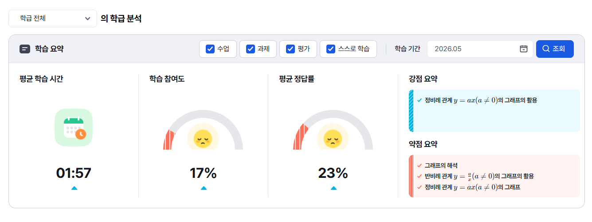
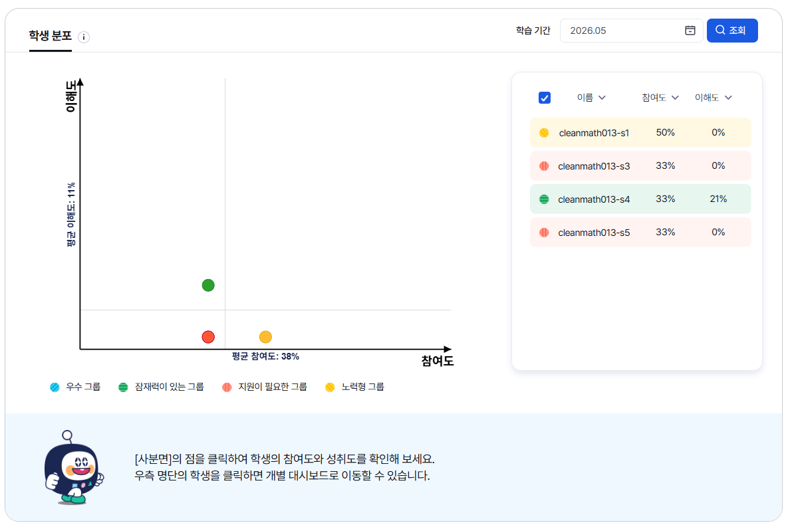
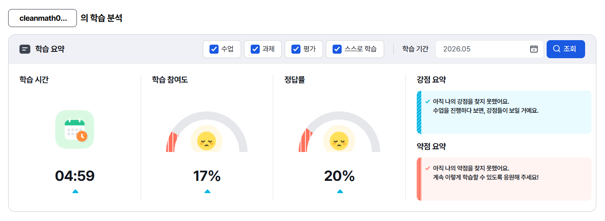

1. 개선 배경
현재 학습 기간 조회 기능은 옵션은 제공하지만, 실제 선택 범위가 사용자의 의도와 다르게 고정되는 문제가 있음
1주 선택 시 주 단위 고정
과거 주 선택 시 일~토 기준으로 고정되고, 현재 주 선택 시 일~현재 요일로 고정됨
1개월 선택 시 월 단위 고정
월 리스트 방식으로 선택되어 특정 기준일 기준의 최근 1개월 조회가 어려움
옵션별 UI 구조 상이
1일/1주는 캘린더형, 1개월은 월 리스트형으로 제공되어 사용 흐름이 끊김
2. 개선 목표
기간 선택 자유도 개선
사용자가 원하는 기준일 또는 기간 범위를 선택할 수 있도록 개선
UI 일관성 확보
모든 옵션을 동일한 캘린더 팝업 구조 안에서 제공
조회 조건 명확화
입력창에 실제 조회 기간을 명확한 날짜 범위로 표시
분석 신뢰도 향상
사용자가 의도한 기간의 학습 데이터를 정확히 확인할 수 있게 함
3. 적용 범위
본 개선안은 AI 분석 내 기간 조회 UI가 적용되어 있는 교사/학생 화면을 대상으로 함. 동일한 기간 선택 정책을 적용하여 메뉴 간 사용성을 일관되게 맞춤
AI 분석 > 학급 분석 > 학습 요약
학급 단위 학습 요약 데이터를 조회하는 기간 선택 영역에 개선된 캘린더 UI/UX 적용

AI 분석 > 학급 분석 > 학생 분포
학생 분포 데이터를 확인하는 기간 조회 영역에 동일한 기간 선택 정책 적용

AI 분석 > 학습 분석 > 학습 요약
학생 개인의 학습 요약 데이터를 조회하는 기간 선택 영역에 개선된 캘린더 UI/UX 적용

4. TO-BE 기간 옵션 정의
| 옵션 | 선택 방식 | 조회 범위 | 입력창 표시 예시 |
|---|---|---|---|
| 1일 | 날짜 1개 선택 | 선택한 하루 | 2026.05.26 |
| 1주 | 기준일 1개 선택 | 선택일 포함 최근 7일 | 2026.05.20 ~ 2026.05.26 |
| 1개월 | 기준일 1개 선택 | 선택일 포함 최근 1개월 | 2026.04.26 ~ 2026.05.26 |
| 직접 설정 | 시작일 → 종료일 순서 선택 | 사용자가 지정한 기간 | 2026.05.10 ~ 2026.05.26 |
5. 사용자 흐름
기본값 노출
최초 진입 시 현재 시점의 월이 기본 선택됨. 현재 월이 끝나지 않았다면 실제 조회 범위를 함께 표시하는 방식
캘린더 열기
캘린더 아이콘 또는 날짜 입력 영역 클릭 시 기간 선택 팝업이 열림
옵션 선택
1일 / 1주 / 1개월 / 직접 설정 중 원하는 조회 방식을 선택
조회 실행
선택된 기간이 입력창에 반영되고, 조회 버튼 클릭 시 해당 범위의 학습 분석 데이터가 갱신됨
6. 웹 화면 기획안
예시 화면에서는 학습 요약 지표나 다른 필터를 제외하고, 기간 조회 영역과 캘린더만 남겨 핵심 동작을 보임
조회 영역 구성
화면 상단에는 학습 기간 입력 영역과 조회 버튼만 배치하였음. 실제 학습 요약 지표는 조회 결과 영역에서 별도로 노출
7. 정책 및 예외 처리
- 미래 날짜는 선택할 수 없음
- 직접 설정에서 종료일은 시작일보다 이전으로 선택할 수 없음
- 직접 설정에서 시작일 이후 더 이른 날짜를 클릭하면 시작일을 재선택한 것으로 처리
- 조회 가능 최대 기간이 필요하다면 직접 설정에 최대 N개월 제한 적용(개발 확인 필요)
- 입력창에는 실제 조회 범위 표시
- 1주/1개월은 기준일 선택 후 자동으로 기간 범위 하이라이트
- 기본값은 현재 월로 유지하되, 현재 월의 실제 조회 범위 표기
- 옵션 변경 시 기존 선택값은 해당 옵션의 정책에 맞게 자동 재계산
8. 동작형 캘린더 프로토타입
기획안에서 정의한 기간 선택 정책을 실제로 클릭해볼 수 있는 예시 화면